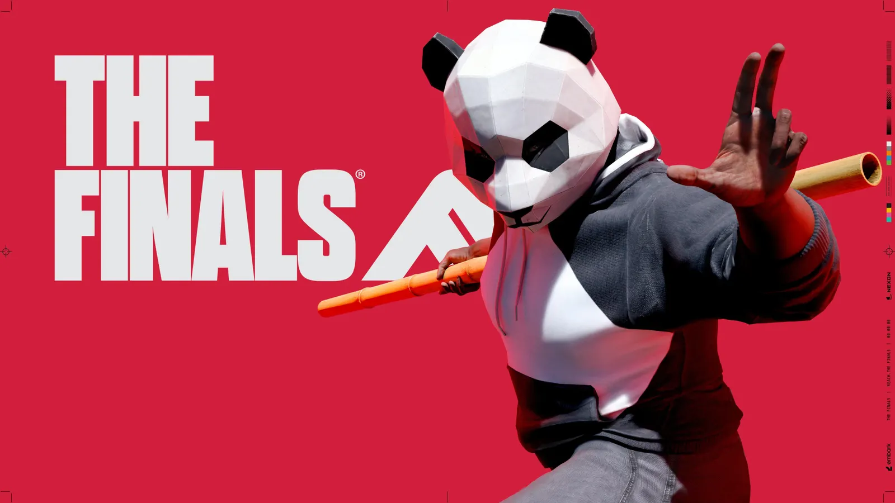
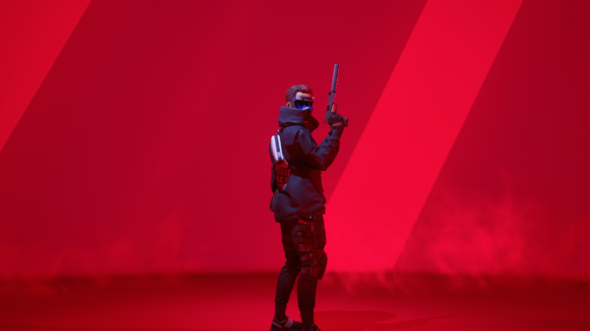

Lets get into The Finals
Welcome Contestant! The Finals is live and awaiting more competetors. Play one of the three classes which are light medium and Heavy. Each classes offers unique equipment and weapons to use to bank the cash and secure the win. Jump into quick play, World Tour or Ranked and have some fun. Check through events or level up to earn a wide variety of customization items for any of the classes. If a player want's to warm up before hopping into a game hit the practice mode.
Get Started
Light Class
The Light class is the fastest of all three classes with the least amount of health. This class has access to a grappling hook, evasive dash and a cloaking device. Playing the light class can allow for some stealthy and sneaky plays to dispatch the enemy to secure the objective. Try playing a smoke bomb + cloaking device and any close range smg for a stealthy suprise
Medium Class

The medium class is the medium speed and health of all three classes with access to a Guardian Turret, Healing Beam and Dematerializer. Playing the medium class can be a great support for your team while also allowing for great pushes toward the objective. Play a healing beam + any mine of your choice to make sure yourteamate are untouchable.
Heavy

The heavy class offers the slowest speed but the most health. This class offers a Charge N Slam, Mesh Shield, Winch Claw and Goo Gun. Playing the heavy class allows for mass destrction and a great tank for the team to intiate a push towards the objective. Wanna wreak havoc and cause big damage play charge n Slam + lmg and a RPG to frustrate your enemies.
Events
Stay up-to-date with the latest Finals patches, DLC updates and more. Be on the lookout for Season 5 which is dropping soon.